Speakers
Drew Adams is a devoted advocate for open-source, volunteering with KDE and openSUSE. He's the President of the Board of LOPSA and organizes the openSUSE, KDE, LOPSA, and NextCloud community booths at SCaLE, promoting collaborative involvement in open source. As a SysAdmin/SRE/DevOps Engineer he has brought his passion for open source and cross-functional collaboration to companies including SUSE, Honey (now a part of PayPal), Ring, and OpenX, among others.
Annanay is a Software Engineer at Grafana Labs. He is the co-creator of Grafana Tempo, the open source distributed tracing database from Grafana, and now works on building AI-powered software to reduce the cognitive burden on SREs. When not at his desk, Annanay enjoys watching F1, playing badminton, ultimate frisbee and football.
Omar Alva is a Technical Architect at Munich Re, with expertise in Cloud, Linux, and Automation. Beyond the tech world, he explores AI, enjoys sports, and finds inspiration in music. Connect to discuss tech trends or share interests in AI, sports, and music.
Christina focuses on helping organizations build Internal Developer and Data Platforms on Kubernetes using open source projects. Her goal is to simplify deployment for developers and data scientists, making it easy to adopt Kubernetes and cloud resources.

Jimmy Angelakos is a Systems and Database Architect and recognized PostgreSQL expert who has worked with, and contributed to, Open-Source tools for 25+ years. He is passionate about participating in the community, is a Contributor to the PostgreSQL project, and an active member of PostgreSQL Europe. Jimmy is a regular speaker at conferences and events, sharing his insights with the community. Author of ...
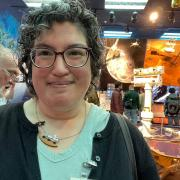
Monica is an open source community advocate who loves connecting people to help them and their projects succeed. They have worked on the Community Team at Canonical, and currently serve on the Ubuntu Community Council. Right now, they are bringing their A+ gif game to the Thunderbird project as a contract marketing specialist. Their background is in the humanities, with a degree in Ancient Greek from DePauw University, Maritime Studies from East Carolina, and graduate coursework in history...
Camila is from Brazil currently living in Berlin, Germany. She has worked for years as a front-end developer and got into open source by learning and doing C++/Qt development in the KDE community. After moving to Berlin, Germany, she also worked with PHP, Ruby on Rails and AngularJS, Go and Drupal 7. She's now a desktop client developer at Nextcloud but just might do other things than C++ sometimes.
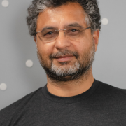
Sunny Bains has been developing software for longer than he can remember. He is currently a Software Architect at PingCAP where he is working on distributed storage and learning Rust. Before joining PingCAP he was a Senior Director of Software Development at Oracle. At Oracle he was the lead of the MySQL/InnoDB team and made the MySQL/InnoDB engine scale to what it is today.

Daniel is engineer and mathematician turned software developer. He is passionate about reproducible build systems.
Michael Banck is the database tech lead at NetApp Germany and a database reliability engineer for the Instaclustr managed Postgres platform. Before that, he was the PostgreSQL team lead at credativ (now part of NetApp). He joined credativ in 2009 and has been a Debian Developer since 2001, currently most active as part of the PostgreSQL packaging team. He is also a PostgreSQL and Patroni contributor, as well as active in several other open source projects.
Leading the PostgreSQL team...

Lori joined her first Internet startup as a senior UNIX system administrator at a company that eventually went public. This got her hooked on the thrilling growth and success process and eventually she started an international executive consulting practice. In 2017 she co-founded the ShellCon infosec conference in Southern California and developed RaiseMe, a unique career development effort for nonprofits. RaiseMe has successfully helped people re-career into their first infosec engineering...
Life-long engineer. Worked at Google, flew jet planes in the Marine Corps, trained cyber-teams, formed and led teams to perform rapid hardware and software capability development, worked with the Digital Service to bring modern software practices to the DoD and government. Left the service to create a contracting startup bringing AI/ML products to DoD. After several iterations of applying the Nix ecosystem in various teams, the difference was stark. This led to the desire to bring this set...
Sean is the CoFounder & CEO of Gooey.AI, a AI platform and consultancy that provides an orchestration layer with low-code workflows and unified billing for the Generative AI universe, servicing leading brands, development orgs like the Gates Foundation (see https://Farmer.CHAT) and enterprises with solutions from OpenAI, Stability, Google, and more.
Previously, he founded Dara.network, the community platform for Global South changemakers and...

Ryan is an Advocate at Redgate focusing on PostgreSQL. Ryan has been working as a PostgreSQL advocate, developer, DBA and product manager for more than 20 years, primarily working with time-series data on PostgreSQL and the Microsoft Data Platform.
Ryan is a long-time DBA, starting with MySQL and Postgres in the late 90s. He spent more than 15 years working with SQL Server before returning to PostgreSQL full-time in 2018. He’s at the top of his game when he's learning something...
I am a software engineer dedicated to supporting and accelerating scientific research. I am currently working at CliMA, the Climate Modelling Alliance, where I contribute to the development of a next-generation Earth-System Model.
Before joining CliMA, I obtained my PhD in theoretical and computational physics focusing on simulations of black holes. During my PhD, I was a NASA Future Investigator for Space Science and a Texas Advanced Center for Computing Frontera fellow. As part of...
I studied Theoretical Mathematics in college, but every job I've ever had was with computers, and employers have always wanted me to work with data. I've worked with Oracle, Illustra, Informix, MySQL and PostgreSQL for a variety of startups over the last 30 years.
KC Braunschweig has spent the last 13 years as a production engineer working on Facebook/Meta infrastructure. He's currently working on public cloud infrastructure and tooling. He's previously worked in areas including logging, stream processing, distributed coordination, search infrastructure and configuration management. He's been a SCaLE attendee and volunteer since SCaLE 1x.
Tom is a Principal Open Source Strategist for AWS. He has been a part of the FOSS community since 1997, when he skipped his last day of junior high to go to Linux Expo. During college, he worked for a high-availability startup to cover tuition, and when they crashed along with the majority of the IT sector, he dropped out of college and went to work for Red Hat full-time. He worked for Red Hat for almost twenty years, in Support, Sales Engineering, Release Engineering, Engineering Management...
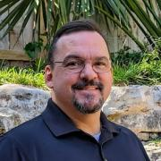
Thomas Cameron has been in IT since 1993. He started out with Novell NetWare, then worked with Microsoft technologies, then discovered Linux in 1995. He's been an Open Source geek ever since. He's managed large scale Linux environments for organizations from banking to real estate to chip manufacturing. He worked at Red Hat from 2005 through 2019, as a chief architect and global technical evangelist. He then went to AWS, where he was a senior technical trainer. Recently, Thomas...

Leigh is building Flox and is active with the Kubernetes and Flux projects.
He has a background in infrastructure software with a security niche.
He authored Flux 2's security model and kubeadm's mTLS implementation and is currently working on Kubernetes authorization with SIG Auth.
Leigh and his wife love to snowboard in Colorado and have 3 dogs.
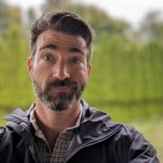
Software Engineer at Google, with experience in Business Intelligence, Build tooling, Performance monitoring
Davide Cavalca is a Production Engineer at Meta on the Linux team. Davide has been working in the systems space for over 15 years, always with a strong focus towards open source and automation.

Alison is an automotive systems programmer and kernel engineer and has worked at Nokia, Mentor Graphics, Peloton Technology and Aurora Innovation. In 2014-2015, she collaborated on-site with a customer in Germany. Alison has spoken at events including ELC and ELCE, USENIX, LibrePlanet, linux.conf.au, Automotive Linux Summit, SCALE and Maker Faire. She lives in Mountain View , CA where she rides bikes, attends concerts, drinks beer and studies German.
Adanelly is a senior at San Fernando High School and is interested in studying engineering when she goes to college. Through DIY Girls, she's had the opportunity to execute various projects that address a specific problem such as MedMe, a timed pill dispenser (2020-21), Robodoro study companion (2021-22), Intelliplant seld-watering plant system (2022-2023), and Digital Safe (2023-24). She has been a part of this organization since elementary school and, upon high school graduation, will be...
Alice Chen is the Co-Founder and CTO of OpenContext. With over 20 years of experience in the tech industry, Alice has worn many hats including systems engineering, build engineering, operations, QA, DevOps and solutions architecture. She specializes in designing and implementing systems to move data from one place to another. Passionate about automation, Alice is dedicated to building tools like OpenContext to provide insights the DevSecOps teams need to reduce toil.
Husband, Father, Computer Programmer. 20+ years experience in software development. 20+ of technology and programming as a hobby. Always tended towards trying to make his software deploy better. Doing DevOps coming from programmer side even before it was called that. Security perspective permanently bent from work on MLS high assurance trusted operating systems.
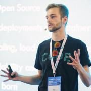
Jamie is a Developer Advocate for Sonatype formally IBM, based in the UK. He talks about the importance of security in software, improving developer productivity and raising awareness about energy consumption of technology.
Passionate about discovering ways to help reduce developers carbon footprint, he is also a subject matter expert in containerised solutions and build technologies. He fell in love with Java at University and has gone on to talk at many conferences about using Java...

Joe Conway is a technology executive with skills in a wide array of disciplines and extensive international business experience. He has been involved with the PostgreSQL community since 1998, presently as a PostgreSQL Committer, Major Contributor, and Infrastructure Team member. He is also the author and maintainer of a PostgreSQL procedural language handler for the R language, PL/R. Joe is currently Head of the PostgreSQL Contributors Team at Amazon Web Services, RDS Open Source Databases...
Michael Coté works at Pivotal in technical marketing. He’s been an industry analyst at 451 Research and RedMonk, worked in corporate strategy and M&A at Dell in software and cloud, and was a programmer for a decade before all that. He blogs and podcasts at Cote.io and is @cote in Twitter.
Looking for truth and accountability in software particularly Large Language Models.
• 1974, MS from Georgia Tech in CS
• 1970s: Data Management Consultant at Grady Hospital, Atlanta GA; development work at Georgia Tech Research Institute
• 1980s: Washington DC – worked for defense contractor doing AI and Lisp at facility with 10 US Army captains and one bird colonel
• 1992: Dallas, Texas. PhD in Computer Science at SMU
2020 Program Director Computer Science...

Since the age of 10 I’ve always been passionate about computers. I’ve been working with them ever since. In 2005 I got my degree in computer science. I used to work at a major Belgian university where I was developing the e-learning applications. In that position, I was the one who looked after the databases. From there on I grew to be their MySQL DBA. In 2017 I left the university and joined Pythian as a MySQL Database Consultant. Currently I am working at PlanetScale to support large...
Jenson Crawford is a software engineering leader and an active volunteer based in Los Angeles. He spent the first half of his career focused on optimizing software and is now focused on optimizing software and volunteer teams. Jenson is currently VP of Software Engineering for Eastman Kodak and is also serving in multiple volunteer roles.

Matt was once a Docker enthusiast, but was accidentally captivated by Nix and functional programming whilst working for an Embedded Linux company who were using Yocto + Docker for building and deploying software (tools which are exactly the opposite of functional and reproducible!). Since discovering Nix, Matt has quit his job and become a passionate NixOS contributor, evangelist and founder of Nix.How LTD, a Nix Software Consultancy that focuses on converting clients from legacy,...

Jon A. Cruz is a professional developer with over 20 years of experience, working extensively in multimedia, including programming and 3D art creation, and has developed for a wide variety of platforms. Work includes R&D for mobile and other devices, servers for large mail and messaging systems, enterprise security applications, and user interface design and development..
He had participated as a mentor in Google's Summer of Code since its first year with Inkscape and...
Paige Cruz is a Senior Developer Advocate at Chronosphere passionate about cultivating sustainable on-call practices and bringing folks their aha moment with observability. She started as a software engineer at New Relic before switching to Site Reliability Engineering holding the pager for InVision, Lightstep, and Weedmaps. Off-the-clock you can find her spinning yarn, swooning over alpacas, or watching trash TV on Bravo.

Kyle Davis is the Senior Developer Advocate for Bottlerocket at AWS. Kyle has a long history with software development and databases and was a founding contributor to the OpenSearch project. When not working, Kyle enjoys 3D printing, and getting his hands dirty in his Edmonton, Alberta-based home garden.

Owen DeLong is a Senior Manager of Network Architecture at Akamai Technologies and a member of the ARIN Advisory Council. Owen brings more than 30 years of industry experience. He is an active member of the systems administration, operations, and IP Policy communities. In the past, Owen was an IPv6 Evangelist at Hurricane Electric and has worked at Tellme Networks (Senior Network Engineer), Exodus Communications (Senior Backbone Engineer) where he was part of the team that took Exodus from a...
Jen Diamond works on the application team at UCLA's Digital Initiatives and Information Technology Department. She is part of a team that is building the UCLA Digital Library. She has a background as a community organizer, instructor and an advocate to get more women into the programming world by organizing workshops like Rails Girls Los Angeles, Railsbridge and Kids Ruby.
Interested in IT and software development since youth, a full time software developer, passionate of FOSS, Linux advocate and Linux server user since more than 10 years.

Cali Dolfi is a Data Scientist in the Open Source Program Office at Red Hat. Her work focuses on changing the way we look at open source communities through the lens of data science and machine learning. Outside of data science, her passion lies in making careers in technology more accessible for underrepresented groups by mentoring college students and developing accessible academic resources.
Cali is a recent graduate of Boston University where she was a Teachers Fellow, collegiate...
Henrietta (Hettie) Dombrovskaya is a database researcher and practitioner with over 40 years of academic and industrial experience. She holds a Ph.D. in Computer Science from the University of Saint Petersburg, Russia. At present she is
– Database Architect at DW Holdings in Chicago, IL
– Local Organizer of the Chicago PostgreSQL User Group
– Active community member, a frequent speaker at the PostgreSQL Conferences
– A researcher focused on developing efficient...
I (Sweet Tea) have worked on kernel storage since graduating from MIT in 2013. I've been a fan of open source, particularly storage technology, since I started using Gentoo in '05, and was fortunate to get a job out of college working on Linux kernel storage. I began at a startup called Permabit working on a then-proprietary software-defined storage device providing dedupe and compression, which was acquired by Red Hat in 2017. dm-vdo has now been open sourced and is working on...

Katherine Druckman is an Open Source Evangelist at Intel where she enjoys sharing her passion for a variety of open source topics. She is a long-time open source advocate, developer, and podcaster, and is currently the host of Open at Intel and a co-host of the FLOSS Weekly and Reality 2.0 podcasts. Previously, Katherine spent over a decade as Director of Digital Experience at Linux Journal. A passionate Drupalist since she first downloaded a tarball in 2005, she has also been a Drupal...
Kevin is a Java Champion, software engineer, author and international speaker with a passion for open source, Java, and cloud native development & deployment practices. He currently works as developer advocate at Red Hat where he gets to enjoy working with open source projects and improving the developer experience.
Kevin is actively involved in open source communities, contributing to projects such as Quarkus, Knative, Apache Camel, and Podman (Desktop). He is also a member of the...
A repeat founder, Ron dove into the world of developer tooling at Meta’s Facebook as the head of developer products, building the tools powering Meta’s 20,000-strong developer core. Realizing the limitations of existing tooling and recognizing the superpowers of Nix, Ron co-founded Flox to grow Nix and make it accessible to the wider engineering community.
Ron is on the board of the NixOS Foundation where he works on leading key efforts to strengthen and support the entire community....
With experience writing software and managing teams for leading Web companies (Edmunds, Intuit), plus new concept startups, John has a strong background in Web software engineering and release management. He has worked with concurrent, real-time systems developing big-data, Cloud-based Java and Python applications. John currently serves as lead developer for NASA's Exoplanet Watch at...
Will Fancher started using NixOS in 2016. After spending some time using it for Haskell work, he now spends time working on the core OS. He is part of the NixOS github organization's "systemd" team, and he spends a lot of his free time chatting with and assisting people on NixOS's Discourse and Matrix rooms.

Greg Farnum is a long-standing member of the core Ceph development team and founding Inktank engineer. He has served in many roles as Ceph grows and is currently a member of the Ceph Steering Committee and manager of IBM's CephFS group. Greg is passionate about solving problems in distributed computing and expanding the Ceph community.
Senior Database Engineer with Crunchy Data Solutions. Author of several popular 3rd-party PostgreSQL tools such as pg_partman, mimeo, & pg_extractor
Andrew is currently one of the co-founders and CEO of Prodvana. Prodvana is on a mission to intelligently delivery your software with zero overhead. Previously Andrew was CTO of Vise, Vice President of Infrastructure at Dropbox, and spent time at YouTube and AOL. Additionally, he has contributed to the SRE community as a founding member of SRECon and has written a chapter in Orielly's Seeking SRE book.

Dr. Dawn Foster works as the Director of Data Science for CHAOSS where she is also a board member / maintainer. She is co-chair of CNCF TAG Contributor Strategy and an OpenUK board member. She has 20+ years of experience at companies like VMware and Intel with expertise in community, strategy, governance, metrics, and more. She has spoken at over 100 industry events and has a BS in computer science, an MBA, and a PhD. In her spare time she enjoys reading science fiction, running, and...
Developer Advocate with 15+ years experience consulting for many different customers, in a wide range of contexts (such as telecoms, banking, insurances, large retail and public sector). Usually working on Java/Java EE and Spring technologies, but with focused interests like Rich Internet Applications, Testing, CI/CD and DevOps. Also double as a trainer and triples as a book author.

Adrianna Frick has worked on technical skills validation exams and credentials for companies including Canonical and knows what separates good certs from bad. She began her journey in open source in the late 1990s at Walnut Creek CDROM working with teams from Slackware Linux and FreeBSD among others. As someone who has experienced the employment volatility of tech bubbles, and as someone who left and returned to the industry after career changes, educational gaps, and family caregiving, she...

Justin is a engineer building communities and solutions.

Richard Gaskin is the owner of Fourth World Systems, a software design and development consultancy in Los Angeles. Since founding the company in 1994, he's developed dozens of commercial and open source applications used by a wide range of organizations, including FedEx, AOL, the US Library of Congress, and thousands of hospitals and universities around the world.
Although he started his career with Mac OS, Richard has since delivered applications for Irix, every version of...

Michael Gat was a Tech Program Manager at AWS, where he managed capacity and efficiency programs for the Application Networking organization, and later worked for customer billing. Previously, Michael consulted to midsize businesses transitioning to cloud architectures and was a developer of financial systems.
Michael has a BA in CS from Columbia and an MBA from UCLA. He serves on the SCaLE Program Committee, lives in Seattle, and attends to the whims of multiple cats.
Mattias is a Director of Tech at Venafi. He has significant experience guiding clients' Cloud Native strategy and technical implementation. Currently, he is responsible for the internal Kubernetes platform of a global financial institution and for improving the lives of application teams to adopt Kubernetes. When he is not working, he is an avid runner and enjoys travelling.

Carl George leads the Extra Packages for Enterprise Linux (EPEL) team in the Community Linux Engineering group at Red Hat. He participates in many open source projects, often related to his packaging activities in Fedora, EPEL, and CentOS. He is a member of the EPEL Steering Committee, the Fedora Packaging Committee, and various Fedora Special Interest Groups.
Tyler is a programmer and a problem solver, with 6 years of experience designing, discussing, and building complex systems in a multitude of languages. His technical interests lie in cloud computing, automation, declarative infrastructure and application configuration, and machine learning. When he isn't building things, Tyler can often be found playing with rocks: scrambling, climbing, and mountain biking.
Neal is a developer and contributor in Fedora; CentOS; Mageia; and openSUSE, focusing primarily on the base Linux system components, such as package and software management, as well as the Linux desktop. He's a big believer in "upstream first", which has led him all over the open source world.
A technologist and cypherpunk, passionate about cutting-edge open source tech. Shipped XDG accent colors and many other things.
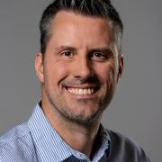
Gareth is the senior software developer at VMware working on the Salt project. Gareth lives in Southern California with his wife, where they are owned by several pets.
I’started using Linux in 1996, and PostgreSQL in 1998. Love to travel, listen to music, and enjoy life with friends. Joined PostgreSQL community around 1999. Currently maintaining PostgreSQL official RPM repository at https://yum.postgresql.org and https://zypp.postgresql.org . Contributed to many PostgreSQL related projects. Already a Fedora and EPEL contributor as well.
Working at EDB as Postgres...
Chanchal is a founding member of the Site Reliability Engineering (SRE) team at Edmunds. He loves solving complex problems using technology and data. He enjoys traveling, nature, and hiking in national parks.
Drew started working for the foundation as an intern in 2015 and continued as a consultant starting in 2018. He now works as a full-time marketing coordinator for the foundation.

Jon Haddad has 20 years experience in both development and operations. Jon has worked on the database teams at both Apple and Netflix as well as helped hundreds of organizations as a consultant working with Apache Cassandra.
Magnus Hagander is a member of the PostgreSQL Core Team and a developer and code committer in the PostgreSQL Global Development Group.
Magnus is one of the original developers of the Windows port of PostgreSQL. These days, he mostly works on other parts of the PostgreSQL backend, recently with a focus on security features, monitoring and backup/replication interfaces and tools.
He is also one of the core members of the postgresql.org infrastructure team, maintaining the servers...

Nathan Haines is an author, instructor, and computer consultant who fell in love with Ubuntu in 2005, and helped found the Ubuntu California Local Community Team to share that excitement with others. As the leader of the California team and a member of the Ubuntu Local Community Council, he works to help others support and share Ubuntu worldwide.
His mission to educate and excite people about Free Software and Ubuntu continues with his book, Beginning Ubuntu for Windows and Mac Users...

Jon "maddog" Hall is the Board Chair Emeritus of the Linux Professional Institute (lpi.org).
During his career in commercial computing which started in 1969, Mr. Hall has been a programmer, systems designer, systems administrator, product manager, technical marketing manager, author and educator.
He has worked for such companies as Western Electric Corporation, Aetna Life and Casualty, Bell Laboratories, Digital Equipment Corporation, VA Linux Systems, SGI and Linaro...

Nuri Halperin is a software architect, speaker, and author. He helps companies design scalable systems, websites, and business applications. He’s been turning projects into success stories for a variety of clients for over 2 decades.
He is the author of several Pluralsight.com courses. He's also a Microsoft MVP alum, a MongoDB Champions member, and recipient of MongoDB's William Zola Award for Community Excellence. He enjoys tinkering with Arduinos, 3D printing, and robotics...
Casey Handmer is the founder of Terraform Industries, a company building synthetic natural gas from sunlight and air. He has worked on optics, gravitation, magnetic machinery, astrophysics, GPS, planetary mapping, and scrolls.
As the Principal Developer Advocate at Konstruct, Frédéric Harper helps Developers, and DevOps be successful with their Kubernetes journey. Fred has shared his passion for technology on the stage at multitudinous events around the world. He’s helped build successful, and healthy communities at npm, Mozilla, Microsoft, DigitalOcean, and Fitbit. He is also the author of the book Personal Branding for Developers at Apress. Behind this extrovert is a very passionate individual who believes in...
Wanda He is a Prin. Database Specialist Solutions Architect at Amazon Web Services (AWS). She works with customers on design, deploy, and optimize relational databases on AWS. Wanda has been working with relational database for over 20 years. Previously, she was a member of of Microsoft SQL Server Customer Advisory Team. At AWS, she specialized in RDS/Aurora PostgreSQL, RDS SQL Server, and RDS on Outposts.

Tejun has been working on various aspects of Linux kernel since 2005 and is currently maintaining libata, percpu memory allocator, workqueue, and control group. He currently works as a software engineer for Facebook.
Alexa Hernandez is a 10th grader in the Invent Girls program in San Fernando, CA. She enjoys hands-on projects as well as coding which is why she enjoys being part of Invent Girls. She is a young first-gen Latina aspiring to go to the best-ranked STEM universities like MIT or Cal Tech. Outside of school, she enjoys reading fantasy sci-fi books and watching World Crisis films because of the self-preservation component and always a chance to learn something new.
Christian is a well rounded technologist with experience in infrastructure engineering, systems administration, enterprise architecture, tech support, advocacy, and product management. Passionate about OpenSource and containerizing the world one application at a time. He is currently a maintainer of the OpenGitOps project, a member of the Argo Project Marketing SIG, and co-host of GitOps Guide to the Galaxy. He focuses on GitOps practices, DevOps, Kubernetes, and Containers.
Rob is an engineer at Xolv. He received his B.S. in Computer Information Systems from Chapman University. In his free time, he volunteers on SCaLE Tech Team and is a nixpkgs maintainer. When he’s not contributing to open source projects, you can catch him participating in sailing races around California or tinkering with digital modes on his HAM radio.
Tracy Homer works as the Operations Manager for Software Freedom Conservancy. Tracy also serves on the board of her local hackerspace, an organization committed to teaching and promoting open technology exclusively. In addition to being the first point of contact for interested members, she also authorizes people to use the laser cutter, and 2d design classes in Inkscape. She is passionate about accessible technology so that people are able to have the tools they need to be creative and...
Shaun is a Production Engineer at Meta, where they have been i shaping integrations with the public cloud infrastructure landscape. They specialize in creating intuitive platforms for container creation and Kubernetes management, with a particular focus on building infrastructure-level software to support both generic compute and large-scale Artificial Intelligence HPC training clusters. Shaun's work is dedicated to enhancing accessibility and efficiency for developers, driving innovation,...
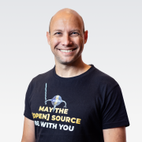
Horovits lives at the intersection of technology, product and innovation. With over 20 years in the hi-tech industry as a software developer, a solutions architect and a product manager, he brings a wealth of knowledge in cloud and cloud-native solutions, DevOps practices and more.
Horovits is an international speaker and thought leader, as well as an Ambassador of the Cloud Native Computing Foundation (CNCF). Horovits is an avid advocate of open source and communities, an organizer...
Kevin is a Principal Software Engineer at Red Hat building subscription functionality for console.redhat.com using Java, Quarkus, Spring Boot, OpenShift, and Kafka. Kevin is based out of Raleigh, NC.
Julia designs, deploys and supports high-availability, disaster recovery, and software defined storage systems in her role as a systems engineer at LINBIT. Before joining the team at LINBIT, she implemented and maintained system integrations and automations within a primarily Linux-based environment, across several layers. Julia is passionate about well-architected, high performing infrastructure and enjoys learning and speaking about best practices and new technologies that may be...
I'm Xe iaso, a technical educator, twitch streamer, vtuber, and philosopher that focuses on ways to help make technology easier to understand and do cursed things in the process. I live in Ottawa with my husband and I do developer relations professionally. I am an avid writer for my blog xeiaso.net, where I have over 500 articles. I regularly experiment with new technologies and find ways to mash them up with old technologies for my own amusement.
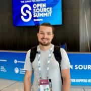
Andrei spent 2022 as the technical leader of a startup automating cybersecurity solutions and as a security engineer in the Romanian Army. He left the public sector after finding that the startup idea was unfeasible, and accepted a position at Canonical to safeguard Ubuntu and its open-source components. His area of expertise is software security, and he has lately contributed to the open source with projects such as multiple SAST tools and a cyber reasoning system. In addition, he...
Brittany has led open source advisory councils, open source ambassador programs, open source contributions, InnerSource programs and the OSS gray areas in between at scale within large companies. Brittany currently is the co-chair for both the FINOS Open Source Readiness SIG and InnerSource SIG as well as sits on the Steering Committee with the ToDo Group. At Fannie Mae as the OSPO strategist, Brittany is sharing these best practices for OSS and InnerSource with the teams across the...
Nikita Jain is a member of the Google Privacy, Safety & Security Product Marketing Team and has 10+ years of experience in product marketing. She has been leading marketing for Cybersecurity at Google, managing and scaling go-to-market programs across Google to land key cybersecurity initiatives such as ‘World Password Day’ and ‘Cybersecurity Awareness Month’ successfully with the industry. She leads the product marketing strategy for cybersecurity globally across Google, spearheading...

Elizabeth K. Joseph leads the Open Source Program Office for IBM Z (mainframes!). Previously, she spent time working on Apache Mesos, and four years as a systems engineer on the OpenStack Infrastructure team and six years on the Ubuntu Community Council and has held various roles in the Ubuntu community and is the co-author of The Official Ubuntu Book, 8th and 9th Editions. At home in San Francisco, she sits on the Board of Directors for Partimus.org, a non-profit in the Bay Area providing...

Jonathan Katz is a Principal Product Manager Technical at AWS for Amazon RDS. Prior to this, he was the VP of Platform Engineering at Crunchy Data, focused on managing PGO, an open source Postgres Operator.
Jonathan is a member of the PostgreSQL Core Team and involved in various governance aspects of the PostgreSQL Global Development Group. He serves as a Secretary and Director of the nonprofit PostgreSQL Community Association of Canada and is a Director of the nonprofit United States...
Oz Katz is the Co-Creator of the open source lakeFS Project, an open source platform that delivers resilience and manageability to object-storage based data lakes, as well as the CTO and co-founder of Treeverse, the company behind lakeFS. Oz engineered and maintained petabyte-scale data infrastructure at analytics giant SmilarWeb, which he joined after the acquisition of Swayy.
Pankaj Kedia is a tech intrapreneur and inventor turned AI investor, entrepreneur, educator, advisor, and thought-leader. As a tech intrapreneur, Pankaj played leadership roles in founding, incubating and growing a series of new personal computing businesses at Intel and Qualcomm over the last 3 decades. He is credited for driving the growth of the Internet with laptop PCs, establishing mobile Internet with smartphones, and capitalizing on cloud expansion with IOT and wearable devices....
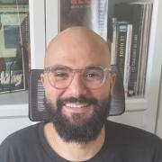
Hichem brings more than 10 years of experience in the big data processing domain. He is currently an OSS Product Architect at Instaclustr (part of NetApp). In his role, he works with the product team to prioritize market and customer needs, transforming them into new features.

Nina Kin is the Technical Lead for LA Metro’s Digital Services Team. With over 15 years in local government and a background in software engineering, she is determined to make government work better for the public. Outside of Metro, Nina serves as a Board Member for MobilityData and is on the organizing team for several government/tech/data events, such as Data + Donuts LA, MaptimeLA, the LA Arts Datathon, and the International Humanitarian Mapathon.
When she’s not in front of a...
__q_itok=__z-_z-E.jpg)
Cornelius is into multi factor authentication since 2004. He is the project lead of the MFA system privacyIDEA.
As a consultant he learnt to unterstand customers requirements in heterogenous networks. He planned and implemented several PKIs for smartcard usage and was one of the first to work on the interoperability of the Aladdin eToken.
In 2006 he started one of the the first open source one time password systems. In 2009 he initiated an enterprise OTP solution. In 2014 he...
Callahan is a software developer at Canonical where he focuses on Snapcraft, a developer tool for building and packaging applications.
He enjoys fabrication and writing about himself in the third person.
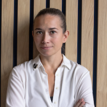
Tatiana Krupenya has been the CEO of DBeaver for the last 6 years. She is a regular speaker and active participant in various open-source conferences. DBeaver is the main contributor and maintainer of the DBeaver Community Edition, an open-source product, a universal interface for working with almost all existing data sources. DBeaver is widely used globally. These days, more than 8 million users run DBeaver daily to connect to their databases.
Apoorva is a Sr. Specialist Solutions Architect, Containers, at AWS where he helps customers who are building modern data platforms on AWS container services. He is passionate about open source, distributed computing and AI/ML for societal good. He lives in Southern California with his wife, 6 year old son and a 2 year old pup.
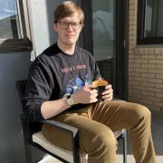
James Kunstle is a software engineer in Red Hat's Open Source Program Office. James finished his graduate work at BU in AI, having finished collaborative research with Red Hat in the adversarial machine learning space. He works on the oss-aspen project and oss-aspen/8Knot, and is based in Boston.
Alan is a devops engineer focusing on deployments and running services at massive scales. With over 15 years of experience in the devops world he is currently using his skills to create better observabilty for all services at Ring.

I love Coding, I grew up in a small town in Chile and one weekend, 16 years ago, I had the flu and could not go out. I decided to learn how to code in Python and that was the beginning of the road that would moved us all to the Northern California so that I could join the Production Engineering team at Instagram. Also like eating, drinking and cooking (in that order).
Stephanie Lieggi is executive director for the Center for Research in Open Source Software (CROSS) and the UC Santa Cruz Open Source Program Office (OSPO). In her current role, she supports the work of academic-based open source projects and enables a sustainable contributor base through the establishment of hands-on mentorship programs. Stephanie promotes the use of open source in academic settings as well as increasing diversity and inclusion in open source ecosystems.

I'm a nerd, and proud of it! I love solving problems and technology is the best way to do that. I work professionally as a Developer Advocate for Camunda. On the side I'm a husband, father, collector of hobbies, gardener, and outdoorsman (hiking, camping, canoeing/kayaking). I enjoy working analog, with my hands, whenever possible. I hate chores and cleaning up after myself.
Tony Loehr is the Developer Advocate for Cycode. Their prerogative is to make it easy for developers to use the Cycode platform, and to help protect data through knowledge sharing. They have professional experience with engineering, marketing, and sales and bring a unique perspective on how to implement comprehensive cybersecurity solutions. They value being a lifelong learner, and aim to help teach cybersecurity solutions to people with varying degrees of technical knowledge. In their free...
Gerardo, a seasoned professional with over 11 years of expertise in software development, stands as a trailblazer in the realm of cloud technology. As a distinguished Google Developer Expert in the Cloud, he has showcased an unparalleled commitment to advancing the industry's boundaries.
He has fostered a collaborative environment for like-minded enthusiasts to share insights and push the frontiers of cloud-native technologies. Gerardo's leadership has transformed the community into a...

Jean-Charles "JC" Lopez, an Advanced Technology Specialist at IBM, has been in the field of storage for over 30 years. He has dealt with the challenges of each era over different operating systems and in different environments—from OpenStack to OpenShift and from mainframe to open systems. He likes to share his passion for storage while promoting open-source solutions. Since 2019 he's been working full time with Red Hat OpenShift customers and help them build data services platforms around...

Federico Lucifredi is the Product Management Director for Ceph Storage at Red Hat and a co-author of O'Reilly's "Peccary Book" on AWS System Administration. Previously, he was the Ubuntu Server product manager at Canonical, where he oversaw a broad portfolio and the rise of Ubuntu Server to the rank of most popular OS on Amazon AWS. A software engineer-turned-manager at the Novell corporation, he was part of the SUSE Linux team, overseeing the update lifecycle and...
Denis started his software engineering career at Sun Microsystems and Oracle, where he built JVM/JDK and led one of the Java development groups. After learning Java from the inside, he joined the world of distributed systems and databases, where he has remained ever since. His experience spans from the development of database engines and high-performance applications to training and education on the topic of distributed applications.
Having had his parents murdered before his eyes, as the family was going to the theatre, young Jess dedicated his life to fight crime.
He now works as a systems administrator.

Justin is a technical support engineer at Akuity and Argo CD maintainer. He is passionate about open source and cloud native technologies that leverage productivity. In his spare time you will find him hiking with his family or scuba diving the California Channel Islands.
Saw my first TRS-80 and 15yrs old and have been hooked on computers ever since. I love to write code in Python, but have used everything from dBASE, FoxPro, Delphi and dabbled in C. My current passion is making my development life easier with tools and Open Source. I'm an active contributor to GitHub projects.
Shaun is the CentOS Community Architect at Red Hat. He's an occasional developer and tech writer. He's worked on documentation and documentation systems in a number of open source communities, most notably as part of GNOME for the last two decades.
I am the head of engineering of Blind Insight, a secure data storage service for developers that is currently in private alpha. I've been doing security and network automation for over 20 years and doing global infrastructure for nearly 30 years. I spend most of my time automating things so that you don't have to!
I was formerly the lead for Network Source of Truth when I worked at Dropbox, and Nautobot when I worked at Network to Code. I am the maintainer for Trigger, a...
Dwayne has been working as a Developer Relations professional since 2015 and has been involved in tech communities since 2005. He loves sharing his knowledge, and he has done so, by giving talks at over a hundred events worldwide. Dwayne currently lives in Chicago. Outside of tech, he loves karaoke, live music, and performing improv.
Chris has been a Linux user since the 90s, is a computer historian and has given talks and manned booths in Scales past. He's been involved in LUGs off and on since about 2000, an avid open source developer and deeply values accurate historical narratives.
Tyler Menezes is the Executive Director at CodeDay, where he works to increase diverse Computer Science enrollment across North America by inspiring underrepresented students to give coding a try.
Born in Canada but raised in the Pacific Northwest, he briefly attended the University of Washington before dropping out to start a Y Combinator and venture-backed social video startup in 2011. This, combined with stints working in machine learning at Microsoft Research and as a programmer...
Nick Meyer studied physics and computer science at Caltech, and is currently a Staff Software Engineer on the Platform Engineering team at Academia.edu. A major focus during his tenure at Academia.edu has been streamlining and modernizing the data layer, in particular projects around operations of Academia.edu's PostgreSQL clusters, including upgrades, partitioning, and backup tooling.
Matthew is the Fedora Project Leader and a Distinguished Engineer at Red Hat. He has a fancy hat to prove it. He's also used exclusively Linux on all his home computers since 1999 (the Year of Linux on the Desktop).
Zach is an Engineer at flox and a member of the Nix Documentation Team.
In a previous life Zach built lasers and performed quantum mechanics simulations, but now he builds software with Rust and Nix. Zach has always had a knack for teaching, receiving multiple teaching awards during his PhD. This knack stems from an empathy for the struggles of new users of any technology. Enabling engineers and tinkerers alike to get things done or scratch their own itch has always been a joy for...
Erik Alessandro Mondrian (he/they) is a writer, visual artist, vocalist, musician, filmmaker, scholar, coder, and longtime explorer of virtual worlds. He holds a BA in French, with a minor in Spanish, from the University of Hawaiʻi at Mānoa; an MA in Communication, with a specialization in Mass Communication and Media Studies, from San Diego State University; and an Interschool MFA in VoiceArts & Creative Writing, with a concentration in Integrated Media, from the California Institute of...

I'm a recovering Music Education major that's currently working as a SysAdmin for University of California. Been a Fedora user since Fedora 12 and an Ambassador since Fedora 15. I've been a Fedora Jam (Pro Audio focused spin) contributor since it's conception, and I own way too many guitars.
Nicholas Morey is a Platform Engineer with a passion for DevOps practices. He is on the team at Akuity as a Developer Advocate, talking with the community about anything Argo Project related. He is an experienced Argo CD operator and a Certified Kubernetes Administrator.
Having worked with technology for over 30 years I have been able to help a lot of people. I have promoted customer computers. I have set up and worked in computer labs and been an Ubuntu advocate for over 11 years.
Daphne is a TEDx speaker who wears two hats as the leader of the AI team at Nextcloud and academic researcher in the field of privacy and the future of technology. Her idea worth spreading is that by collecting less personal data, we can get more innovation, financially healthier business models, more competition in the market, and most importantly, more humanity. At Nextcloud she leads the team of AI developers, and she also leads Nextcloud's app ecosystem, developer programme and community...
Professionally... let's just say I've been around. I started off as a structural engineer, but soon migrated to developing software for engineers for a while. After a hiatus doing an MBA, I worked in the financial industry doing data science. Looking to make more of an impact, I joined Google's Open Source Security Team (GOSST), specifically the Upstream Team.
At...
Autumn is a product manager at Microsoft Azure specializing in Linux security. In her previous role at AWS as a software engineer, she focused on the development and release of Amazon Corretto (Java) while actively engaging in the OpenJDK community; before that, she worked as an AWS NoSQL Solutions Architect and created educational content in Python and Java.
Autumn co-hosts the exciting new "Fork Around and Find Out" podcast, sharing stories on tech lessons learned, with her...

As Head of AI Community Engagement, Dave runs events such as hackathons that help developers learn how to use GenAI developer tools like LLMs and MongoDB Vector Search. Dave graduated from Cal Poly: SLO and has worked in developer relations at companies like PayPal, Strikeiron, Redis, Intel, Traceable, Dremio, Harness and now MongoDB. Dave gained modest notoriety when he proposed to his girlfriend in the book "PayPal Hacks"
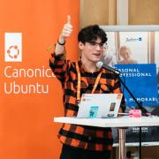
Jason is a young professional in the HPC industry passionate about developing the next generation of lean, mean, open source supercomputing machines. By day, he works at Canonical as their resident HPC engineer making Ubuntu better for supercomputing, and by night he leads the Ubuntu HPC community team as one of its “Not so Ancient Elders.” He is focused on addressing current and future challenges facing the HPC industry such as the convergence of cloud and HPC systems, the impending end of...

Duane O’Brien is an independent researcher focused on open source funding and sustainability. He loves driving this passion through collaboration and conversation. Duane is a force of chaotic good, using his high stats in intelligence and charisma to advocate for the open source community.

Heather Osborn, Engineering Manager, Developer Enablement, Zapier
Heather Osborn has been working in technology as a system and operations engineer and manager for the last 25 years, moving from physical to cloud infrastructure.
Heather is an avid long distance runner who has lots of time to think about these things while pounding the pavement.
Gleb is a Cloud Advocate at Google with expertise in Cloud Database technologies in the Google Cloud. He has over 20 years of experience in data-related technologies, including relational databases, Big Data, application development, data replication and integration solutions. He has worked with products from Google, Oracle, AWS, Cloudera, and other vendors. Gleb has been a presenter at various conferences in the USA, Europe, and APAC.
Developer Advocate for YugabyteDB, distributed SQL database using PostgreSQL query layer. Franck has a passion for learning and sharing in blog posts (blog.pachot.net), articles, conferences, and tech communities (AWS Data Hero and Oracle ACE Alumni)
Surya is a Data Scientist, currently working on the Emerging Technologies team at Red Hat office of the CTO. He is experienced in the field of Machine Learning and Artificial Intelligence. He spent the past year developing models for gaining customer insights, navigating open source tools for data scientists, and doing NLP using transformers models.
Work @Fastly; self hosting, privacy and data sovereignty advocate.
For 12 years now, I've been self hosting everything I can because I firmly believe it's the only way to keep you data under control.
I went through the full spectrum of imperative scripts to fully declarative configuration with NixOS. My current project is to provide building blocks for people to easily self host common services but also any service they want by providing NixOS modules that each manage...
Justin Pflueger is a solution engineer for Fermyon Technologies. He is devoted to helping developers and businesses realize their ideas through the use of cutting-edge technologies like WebAssembly. Before Fermyon, he worked as part of the Commercial Software Engineering team at Microsoft, where he worked with Azure customers to design and implement customized solutions and contributed to open source projects like Azure Service Operator, Exposure Notifications Server and Spin. Outside of...
In AI for 30y, Khai Pham, MD & PhD (AI), works on unifying AI (Machine Learning, Reasoning AI, and Distributed Multi-Agent AI). A leading expert in Distributed AI, he was the founder & CEO of DataMind, a fintech AI using his 1st AI system (renamed RightPoint, acq. for US$637M). At ThinkingNodeLife.ai, he introduces the Generative Distributed Reasoning AI. It is based on reasoning and not machine learning and generates reasoning models and not texts, images, or videos. For drug R&...

People person, technology enthusiast and all-things-open evangelist. I have managed and marketed communities for more than a decade, getting started in the KDE community, followed by working as openSUSE Community Manager at SUSE and co-founded Nextcloud. At Nextcloud I head up our marketing efforts, writing, speaking at and organizing...
Since the age of 13, Ben has been attending SCaLE and tinkering with remote Linux machines. Today, Ben is a software engineer and Head of Product at Coder, an open-source platform for remote development environments. Ben works with the open-source community and large enterprises to move their developer workstations to their cloud.
Cynthia Prieto is a senior at San Fernando Magnet High School who is passionate about creation through engineering and coding. She also finds joy in spending her free time playing the guitar, creating digital art, and playing video games.

Aaron Prisk is a Community Engineer at Canonical who works to support, empower and the grow the global Ubuntu community. Prior to working for Canonical, they spent a decade working in public education IT spearheading various nationally recognized open source initiatives. When they aren't tinkering on some open source project at home, they're probably going on adventures with their kids, brewing beer or reading an old book.

Brian Proffitt is currently the Senior Manager, Community Outreach team for Red Hat's Open Source Program Office. A long-time member of the free and open source software community, Brian is the author of several books on Linux, iOS, and other odd operating systems, as well as former technology journalist from ReadWrite, ITworld, LinuxPlanet, and Linux Today.

Corey is the Chief Cloud Economist at The Duckbill Group, where he specializes in helping companies improve their AWS bills by making them smaller and less horrifying. He also hosts the "Screaming in the Cloud" and "AWS Morning Brief" podcasts; and curates "Last Week in AWS," a weekly newsletter summarizing the latest in AWS news, blogs, and tools, sprinkled with snark and thoughtful analysis in roughly equal measure.

Nish is a Production Engineer at Meta in the Cloud Foundation team. The scope of his team's work spans running compute workloads in the Cloud for many applications running at Meta. Outside work Nish is also a photographer (https://www.nish.photo). At SCaLE, Nish takes professional headsots at the Open Source Career Day.
Anirudh Ramanathan is CTO of Signadot where he focuses on building tools that enable testing of microservices at scale. Prior to this, he was a Software Engineer on the Kubernetes Team at Google where he worked on Kubernetes workload controllers (Deployment, StatefulSet, etc), and enabling stateful and batch workloads in Kubernetes. He led UG Big Data in the Kubernetes community and is an Apache Spark committer.

Kyle Rankin is a security and infrastructure expert with over two decades of professional Linux experience. He is the author of How To Write A Tech Book, The Best of Hack and /: Linux Admin Crash Course, Linux Hardening in Hostile Networks, DevOps Troubleshooting, The Official Ubuntu Server Book, Third Edition, Knoppix Hacks, 2nd Edition, and Ubuntu Hacks, among other books. Rankin was an award-winning columnist and tech editor for Linux Journal, and speaks frequently on Free and Open Source...
I am a NixOS enthusiast interested in making it easy to create safe software. I contribute to the Rust-based Tock Operating System and am working towards ensuring that systems software is reliable and correct.

Reza Rassool is the Founder of Kwaai.ai, driving AI democratization through a Personal AI Operating System.
Formerly CTO at RealNetworks, he led their pivot to AI leadership. With a track record of >$1Bn exits, Reza is an award-winning innovator with 27 US patents. His extensive expertise spans computer vision, edge AI, and founding roles at Zya and Widevine Technologies (acquired by Google), and contributions to the development of Lightworks NLE, a Technical OSCAR/EMMY-winning...
Hi, my name is Samuel. It is nice to meet you. I am a double major electrical and computer engineer in my last semester at Cal Poly Pomona. I have a background in cybersecurity and radio projects. I really enjoy working with anything that involves computers, so Linux is no exception to that. I met up with some cool folks at the last Scale I went to (I think it was 2021), including the Nix group, and I was instantly hooked. I work as a PCB designer intern for WhiteFox Defense technologies and...
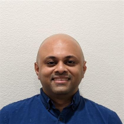
Krishnakumar (KK) started his professional life with porting Linux to embedded boards used in firewalls, electric networks etc. Spanning two decades of industry experience, KK has spent time solving challenges, building products and features in areas such as High performance computing (HPC), Scalable filesystems and Storage. He came to Microsoft as part of Storsimple (a hybrid cloud storage product) acquisition and stayed around working on intersection of edge and the cloud and spent time in...
Xavier René-Corail is the Senior Director of the GitHub Security Lab. His mission is to inspire the open source community, security researchers, and developers to secure open source software through better security practices. Prior to GitHub, Xavier was the Head of Developer Advocacy at Semmle, acquired by GitHub in 2019, and an engineering manager at Murex, where he drove the deployment of development best practices including eXtreme Programing (XP), test-driven development (TDD), Agile,...
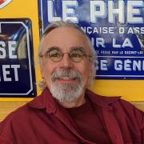
Bob Reselman is an internationally known software developer, system architect, industry analyst, courseware developer and technical writer/journalist. He is presently Senior Technical Analyst at Blockchain Journal. Bob has written a number of books and hundreds of articles on a variety of indepth technical topics for publications such as Red Hat Architect, DevOps.com, TechTarget, and DZone to name a few. Bob is one of Instruqt's premiere development partners. He has also...
Felipe Reyes has over 20 years of Linux experience, he has been working at Canonical for the last 9 years, he joined the Sustaining Engineering group providing support for Canonical's cloud offerings, later transitioned to the OpenStack Engineering team where he currently develops Charmed OpenStack and serves as PTL for the 2024.1 (Caracal) cycle.
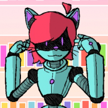
Hey! I’m Jaiden! I'm the COO at Fyra Labs, we're empowering people to change their world with open-source technology. This is my second time attending SCALE, I'm excited to see everyone again!
Discovered the open source world in 2007 at an Ubuntu Party in Paris, France. DBA since 2012 in the web hosting world. Open source DBMS specialist (PostgreSQL, MySQL). Currently Tech Lead in the databases team at OVHcloud, a worldwide Cloud Computing provider.

I motivate, mobilize, and connect cross-functional teams with technical solutions and support and provide customer-focused Computer Professional services with System Administrator experience in commercial and non-profit industries.
I deliver system, network, and security support in a wide variety of business and home environments. I partner with clients for training and end-developer support efforts, especially in the areas of configuration management, operating system integration...

Éamon is a Senior Principal Field Engineer at Grafana Labs, where he builds and maintains internal and external environments, builds out advanced workshops, provides input on product use-cases and acts as a subject matter expert in some specific areas.
Éamon has done the full rounds of customer-facing tech roles over the years: Support, Education/Training, Professional Services, Solutions Engineering and now Field Engineering, giving him tons of customer insights and viewpoints he...

In 2016, Guinevere Saenger transitioned from being a full-time professional pianist to a career in tech. To do so, she obtained a spot at the highly competitive Ada Developers Academy in Seattle, a year-long, tuition-free, bootcamp-style software development training program for women and nonbinary people making a mid-life career switch into tech. As part of her training, Guinevere interned at Samsung SDS on the Cloud Native Computing Team, where, after graduating in July 2017, she accepted...
Ray Salazar is a cybersecurity professional with over a decade in the information security industry. He has a deep passion for technology, security and media. On his free time he attends various conferences, conventions and events in the technology and security space. He has served as a presenter at multiple conferences and conventions. His influence extends beyond technology, as he actively promotes diversity and inclusion in the industry through leadership roles in various organizations....
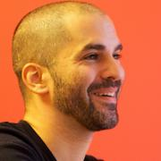
Tammer founded https://superobital.io to provide the industry's best Kubernetes engineering and training. He's a published author, accomplished speaker, mediocre engineering leader, and rather poor software developer.

Vijay Samuel works with eBay's observability platform as its architect. During his time at eBay Vijay has transformed eBay's observability platform into a cloud native offering that is primarily built on top of open source technologies. He loves to code in Go and play video games.
Carlos Sanchez is a Principal Scientist at Adobe Experience Manager, specializing in software automation, from build tools to Continuous Delivery and Progressive Delivery.
Involved in Open Source for over 15 years, he is the author of the Jenkins Kubernetes plugin and a member of the Apache Software Foundation amongst other open source groups, contributing to several projects, such as Jenkins or Apache Maven.
Kerim is a senior developer advocate at HashiCorp, where he coaches operators and developers on sustainable infrastructure and orchestration workflows.
Before he joined HashiCorp, Kerim worked on Industrial IoT for the Amsterdam airport and helped museums bring more of their collections online.
When Kerim isn't working, he's either spending time with his daughter, enjoying aerial photography, or baking a cake.
Dan Schatzberg is a Research Scientist at Meta where he leads the Containers and Resource Control teams. He works at the intersection of the Linux kernel and userspace in the domains of memory management, block I/O and scheduling to improve isolation and efficiency for the thousands of services Meta runs in production. Most recently, he's been involved in the development of sched_ext, a framework for extending Linux with schedulers implemented in BPF.
Jeremy Schneider has been programming for 30 years and working with databases for 20 years, first focused on Oracle and later focused on PostgreSQL. He is currently an organizer of the Seattle PostgreSQL User Group. He joined AWS in 2017 and helped launch Aurora PostgreSQL alongside working on RDS Open Source PostgreSQL.
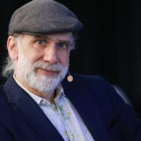
Bruce Schneier is an American cryptographer, computer security professional, privacy specialist, and writer. Schneier is a Lecturer in Public Policy at the Harvard Kennedy School and a Fellow at the Berkman Klein Center for Internet & Society as of November, 2013
Caleb Schoepp is a software engineer at Fermyon. Before working at Fermyon he interned at Microsoft three times on different teams and at the startups UnifyID and Resemble AI. Caleb has experience building on public clouds, mobile apps, full stack web applications, and machine learning integrations among other things. Outside of work he enjoys playing guitar, spending time with family, and playing hockey. Caleb holds a BSc in Computer Engineering from the University of Alberta. He lives in...
Larry's career spans over 30 years in the tech industry including work at prominent companies such as Meta and Shopify. After 23+ years of hands-on engineering work in a myriad of roles (dev, sysadmin, security, observability, devops, etc), he intentionally transitioned to the people-leadership phase of his career and hasn't looked back.
As a tech leader, Larry's first and foremost priority is the professional well-being of the folks he is responsible for. He applies...

Doc Searls is the former editor-in-chief of Linux Journal, where he was on the masthead for 24 years. During that time he did much to establish open source as a Thing, earning a Google-O'Reilly Open Source prize for Best Communicator in 2005. In 2006 he became a fellow with Harvard's Berkman Klein Center and started ProjectVRM, which is all about increasing personal agency in networked markets, and which informed his 2012 book The Intention Economy: When Customers Take Charge. He also co-...
I am the Chief Engineer at Veritas Automata, currently focusing on distributed systems, Kubernetes, and cloud-native applications. I am an enthusiastic believer in blockchain technologies, supply chain, cold chain, pharma applications, and trust in automation. I actively work on innovation, following the latest technologies and integrations, including AI and controls in automation.
My current most involving activity is the development of the Hivenet platform for VA, to provide k-native...
Dr. Viral B. Shah is one of the creators of the Julia programming language and co-founder and CEO of JuliaHub. Julia combines the ease of use of Python with the speed of C. It has been downloaded over 50 million times, and is now taught at MIT, Berkeley, Stanford, and many universities worldwide. Dr. Shah received the prestigious James H. Wilkinson Prize for Numerical Software in 2019. He is also one of the authors of Circuitscape, an open-source program that borrows algorithms from...
Umair is a 20-year veteran of the PostgreSQL community with extensive experience in solving real-world problems with technology. Being a recognized expert in PostgreSQL, he is a blogger and a regular speaker at conferences globally. Umair is the founder of Stormatics - a professional services company with a mission to help businesses use PostgreSQL reliably for their critical data workloads. His previous experience with commercial PostgreSQL has spanned roles related to professional services...

Maya is a Product Manager at Microsoft who is passionate about using data to drive product decisions. She has PM experience in Financial Services and Ed-Tech, and is excited to now work on the cloud and open source. Maya holds a Bachelor's degree in Biomedical Engineering and an MBA, both from the University of Virginia. She is a die hard UVA sports fan and loves to try new restaurants and play tennis in her free time.
Brian is a senior sales engineer at SUSE. He has 25+ years experience in the tech industry and regularly speaks at corporate events and technology venues. As a resident of Southern California he enjoys everything that the region has to offer, golf, good food, and sunny beaches.

Vincent is a Software Engineer based in Long Beach, CA, with over 20 years of experience in payments, e-commerce, and crowdfunding.
Matt has strong experience conveying the benefits of technology and process innovation to executives, teams and end users. With over 15 years of experience leveraging API-driven services to architect customer, product and revenue success, Matt has served as the founding team builder, operational leader and top performer at several pioneering cloud technology companies, such as RightScale, Bitnami, Tackle.io and Pulumi.
Matt is now the VP of Community at Kwaai (...
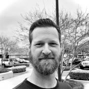
Dave's favorite questions are, how does it work, how can I help and how can we make it beautiful and he's been using these questions to guide him throughout his life. Going back to his childhood days plunking away at his Pop's IBM 5150 or Grandpa's TRS 80 he's been fascinated with technology and parlayed that early experience into various engineering positions at Sun Microsystems, Oracle and many others after. More recently you'll find him talking about his love of abstractions and how...
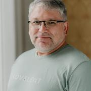
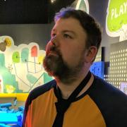
Michael Stahnke is a seasoned engineering executive, having spent the last 15 years working in the development and operational tooling space where also did research and was an author on Puppet’s State of DevOps Reports.
Michael is VP of Engineering at Flox. He was previously in senior engineering leadership at CircleCI and Puppet where he grew engineering teams by 5x or more. He has spent time building high performing teams, organizations and researching engineering effectiveness in...

Many years ago amongst the snow drifts and tundra of the great frozen north, Michael Starch earned his Bachelor’s degree in Computer Engineering from the University of Michigan. Leaving his beloved homeland behind, he started a career at NASA's Jet Propulsion Laboratory in sunny Pasadena. He has remained there ever since working as a developer, operator, engineer, and open source community manager on a myriad of projects and missions. He also mentors at San Marino High School on Fridays....
A well-versed entrepreneur, Harlan has blah blah blah for decades. At some point during the 1980s, he started using and submitting bug fixes and portability improvements to the Network Time Protocol codebase. He has worked directly with NTP since 1992, and in 1996 became NTP’s Project Manager and Release Engineer. In 2011 he created Network Time Foundation to provide bring together and nurture collaborative Open Source projects that focus on Network Time.
The first project to join...
Kiersten is an open-source software developer with the Watson AI and Data Open Technologies Group. She has been an active contributor to several AI technologies over the last several years including Jupyter Enterprise Gateway, PyTorch, and Presto. In addition to contributing quality code, she is passionate about increasing the eminence of the projects that she works on by writing blog posts, thoroughly documenting software features & capabilities, and mentoring new contributors to open...

Scott is a developer with over 20 years of experience in various languages. During that time, the only constant in his development stack has been MySQL. He has a passion for sharing what he has learned on his coding journey so others may learn from his mistakes.
John is the President of Martincoit Networks, a provider of SCION related applications and services. Previously to founding Martincoit, he was a cyber security product architecture developing solutions for the telecommunications, manufacturing, and financial services markets. At Martincoit he is focused on migrating well known and familiar software applications and infrastructure to SCION allowing those applications to benefit from the security and resilience that SCION offers. He is a...
Ethan Sun currently lives in San Diego, California, where he attends The Bishop's School as a junior. With extensive experience in technology innovation, STEM education, nonprofit leadership, micro-finance investment, robotics, fundraising, and humanitarian aid, Ethan has led numerous initiatives to empower underprivileged communities through technology, education, mentorship, fundraising, and volunteer work. He is committed to creating a positive social impact through technology innovation...
John Sweeting is the Chief Customer Officer of the American Registry for Internet Numbers (ARIN), responsible for the overall development, direction and operation of the department. Prior to joining ARIN staff, he served 12 years on the ARIN Advisory Council, 6 of which he was the Chair, and 1 year on the Address Supporting Organization’s Address Council (ASO AC). John served on the Consolidated RIR IANA Stewardship Proposal (CRISP) team which was convened in December 2014 to guide...
Kate Sweetland is a senior biomedical engineering student at USC. She has written radiomic software as a 4D quantitative imaging lab researcher for the past two years. She is fascinated by medical imaging research because it's an interesting crossroads between math and medicine.

Fatima is a graduate of the University of Waterloo, Canada. Post graduation, she's worked full-time as a Software Developer at DRW, a trading firm, and currently works at Yelp as a Senior Software Engineer.
Seasoned technology marketing leader, with a proven track record in defining, delivering and promoting generations of products to market, and a passion for Product Planning, Management and Marketing. Accomplished technology evangelist in Product & Solution Marketing, Business Development, Strategic Partnerships & Alliances, and Technical Sales, backed by a well-rounded knowledge of datacenter technologies (compute, storage, networking, virtualization, and security), combined with...
Chunxu Tang is a Staff Research Scientist at Alluxio and a committer of PrestoDB. Prior to Alluxio, he served as a Senior Software Engineer in Twitter’s data platform team, where he gained extensive experience with a wide range of data systems, including Presto, Zeppelin, BigQuery, and Druid. He received his Ph.D. in computer engineering from Syracuse University, where he conducted research on distributed collaboration systems and machine learning applications.
Wei Tang's career began at Morgan Stanley as a Time Series Engineer, focusing on ETL pipeline design and development in the finance sector. He then moved to eBay, progressing through various roles in infrastructure and software engineering. His work at eBay included building and enhancing significant platforms and tools, like the Sherlock anomaly detection platform and the Cronus agent for software deployment. His technical skills encompass a range of programming languages and...
I’m an undergraduate student at UC San Diego and an incoming masters student also at UC San Diego.
At school, I’m involved in the student organization, Triton Unmanned Aerial Systems, where I lead the software team. I’m also working on TockOS, a secure operating system for microcontrollers.
I’m also a staunch advocate for the open source and right to repair movements. Outside of software, you can find me crocheting, practicing karate or riding public transit.
Paul Tevis helps experts amplify their leadership and organizations scale theirs. He started his career as a software engineer and engineering manager before moving into coaching and Learning and Development (L&D). In 2020, he co-founded Helping Improve LLC, where he works as an executive coach, advisory consultant, and corporate trainer.
Alkin Tezuysal is the Director of Services at Altinity Inc. He has extensive experience in open-source relational databases, working in various sectors and large functions. With over three decades of industry experience, he has led global operations teams for MySQL customers and users. He's a known speaker at worldwide open-source database events.
His recent achievements extend into open-source communities: He was awarded Most Influential in Database Community 2022 by The Redgate...
Thuymy is a Database Solutions Architect at Amazon Web Services (AWS) and has a background in Oracle databases. Previous to becoming a Solutions Architect, Thuymy worked as an Oracle DBA for 15+ years and has since worked as a Solutions Architect at both Oracle and AWS. At AWS, Thuymy works with customers to design database cloud solutions and her technical focus area is in PostgreSQL.
Chris Travers has over twenty years of experience working with PostgreSQL as an application developer, database administrator and engineer, and IT manager. He has worked with (and overseen teams which worked with) petabyte-scale implementations of PostgreSQL often replacing technologies like Elastic Search when scalability limits were reached there.
At Adjust, Chris oversaw teams supporting the infrastructure and data management platforms that supported 700k requests a second and...

Margaret Tucker is a Policy Manager at GitHub working on issues including intermediary liability, copyright, and open source security policy. Margaret is passionate about advocating for developers' interests to policymakers and hearing from developers about what policy issues matter to them. Prior to joining GitHub, Margaret was a Policy Fellow serving the Office of Science and Technology Policy and also worked as a Research Associate for Future Tense, a section of Slate covering the...
Lisa Umberger has been a leader in the cybersecurity and DevSecOps space, building teams and products that bridge the gap between engineering and security. An expert leader in her field, Lisa has worked across industries in both the public and private sectors, helping to implement cybersecurity best practices across organizations.
Career Highlights:
• CEO of Sicura, a DevSecOps automation tool used to implement technical security requirements.
• Led team of cybersecurity...
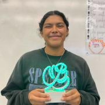
Kimberly is a senior in high school and is planning to pursue a career in medicine. In her spare time she likes to read, run and spend time with friends and family.
Reid works at StormForge, a Kubernetes infrastructure optimization company, splitting his time between product UX design, software development, and customer-facing professional services. Prior to StormForge he spent ten years in various roles as Puppet. IT automation, technical user experience, and workflow optimization have always been a passion. While normally a stickler for intuitive design, he does extend a personal UX pardon to Vim and to Git, despite their idiosyncrasies.
Reid...

By the late-1990s Ken was building customized Linux distributions for a variety of workloads, from server infrastructure in the data center to globally distributed high-performance computing clusters in the pharmaceutical and financial sectors. Always having a passion for the Linux desktop, he spent the past 15 years working in engineering and engineering management roles on the Ubuntu Desktop team at Canonical.
I am a Senior Data Scientist working in the Emerging Technologies team part of the office of the CTO at Red Hat. My work primarily focuses on implementing innovative open AI and machine learning solutions to help solve business and engineering problems.
Experienced generalist roboticist who has built several robots from the ground up and has worked on several start-ups. Graduated from KU Leuven, Belgium with a BS in Mechanical and Computer Science Engineering, and a MSE in Robotics from the University of Pennsylvania.

David is an AI/ML Engineer at DigitalOcean, where he’s dedicated to empowering developers to build, scale, and deploy AI/ML models in production environments. David brings deep expertise in building and training models for applications like NLP, data visualization, and real-time analytics. His mission is to help users build, train, and deploy AI models efficiently, making advanced machine learning accessible to developers of all levels.
I also have a background in storage drivers/...

Karsten has over 20 years leading and working hands-on in a range of Open Source projects in the private, public, academic, research, and non-profit spaces. His nearly three decade career in IT includes almost six years in three professional service organizations. Karsten is founder, partner, and Chief Community Architect for the consultancy Open Community Architects (OCA) https://OpenCommAr.ch

Mandi Walls is a DevOps Advocate at PagerDuty. For PagerDuty, she helps technology organizations increase their effectiveness with modern IT practices and unplanned incidents. She is a regular speaker at technical conferences when she isn’t podcasting, streaming, or writing about PagerDuty. She is interested in the emergence of new tools and workflows to make the task of operating large complex computing systems more approachable.
I am a sophomore in high school, with experience in Machine learning, AI visual tracking, robotics, coding, and I have been involved in some open-source projects.
Yi-Hong Wang is a software developer with the Watson AI and Data Open Technologies group at the IBM Silicon Valley Lab, where he actively works on the Kubeflow, and Presto, Node.js communities. He has been successfully delivering several Kubeflow releases to IBM Kubernetes Service. He is leading the Intermediate Representation adoption in the Kubeflow Pipelines with the Tekton project and helping the community to run ML workflow in multiple frameworks.
Michael Watson, head of developer relations at Apollo, boasts over 5 years in GraphQL and community engagement. A fervent graph architect, he's aided numerous enterprises in optimizing their production environments, particularly with federated architectures.
Rob Weber is an Embedded Software Engineer with several years of development experience in the consumer electronics industry. He enjoys building transformative IoT products that integrate hardware features with cloud services, especially if it can be built using Go. Rob became an embedded software engineer with the help of the e-ALE course at SCALE 16x, and loves the challenges and excitement of embedded development.
Rob joined Cents in the Spring of 2023 to help build powerful...
Allen West is a Security Researcher on Akamai's Security Intelligence Response Team who loves investigating threats and building tools. He is currently pursuing his Master's in Information Security and Assurance from Carnegie Mellon University, received his undergraduate in Cyber Security from Northeastern University, and is a Marine Corps Veteran. Allen frequently publishes on new malware and emerging threats, with his research regularly being covered by The Hacker News, Bleeping...
Marcia Wilbur is a developer, maker, author and advocate in the FOSS space. In 2018, she created the raspberry pi image for Kids on Computers used in Mexico for a new lab. The image was also created for desktop. She is a Debian dev and was lead Deb dev for Linux respin, a backup utility and distro customization tool.
While consulting at Intel, she developed the IEI AIOT Tank prototype, with demos. She wrote IOT tutorials and articles using Raspberry Pi with accelerators and had a...

Scott Williams is a senior DevOps Engineer at University of California (previously Azusa Pacific University and Claremont McKenna College). He contributes to a number of open source software projects and Linux distributions and is an Ambassador for the Fedora Project, representing Fedora at SCaLE since 2010.

John Willis has worked in the IT management for over 40 years. He is researching DevOps, DevSecOps, IT risk, modern governance, and audit compliance. Previously, he was an Evangelist at Docker Inc., VP of Solutions for Socketplane (sold to Docker) and Enstratius (sold to Dell), and VP of Training & Services at Opscode, where he formalized the training, evangelism, and professional services functions at the firm. Additionally, Willis founded Gulf Breeze Software, an award-winning IBM...

Mark Wong is a Software Development Engineer at EDB and is a PostgreSQL Major Contributor. He first introduced himself to the PostgreSQL community in 2003 with open source benchmarking kits and performance data. Since then, he has continued to contribute to various aspects of the community such as a Google Summer of Code mentor, Conference Organizer, Portland PostgreSQL Users Group Co-Organizer, PostgreSQL Fundraising Group Member, and a Director on the Board of the United States PostgreSQL...
Simon brings a holistic approach to team and organizational success through his expertise in web technology, performance, and process management. Simon enjoys the outdoors, photography, and gardening. Spending more time with his two young children is the latest excuse to his awful golf game.
Jon Worley has been an integral member of the ARIN team since 2004, currently serving as the Senior Technology Architect. He possesses extensive knowledge and expertise in all aspects of ARIN policies and procedures, specifically concerning the requesting, managing, and transferring of IP addresses and AS numbers, and technical services such as ARIN's RESTful API. Jon has shared his expertise on these subjects, as well as IPv4 depletion and IPv6 adoption, as a speaker at numerous...
Bernie is VP of Strategic Partnerships & Business Development for MemVerge. He has 25+ years of experience as a senior executive for data center hardware and software infrastructure companies, including companies such as Conner/Seagate, Cheyenne Software, Trend Micro, FalconStor, Levyx, and MetalSoft. He is also on the Board of Directors for Cirrus Data Solutions. Bernie has a BS/MS in Engineering from UC Berkeley and an MBA from UCLA.

Richard has been using PostgreSQL since v. 7.4 in 2003. He is a Principal Support Engineer at EnterpriseDB, providing technical support to DBAs and developers around the world, and works with many clients ranging from private corporations to government organizations and financial institutions.

Paul Yu is a Developer Advocate at Microsoft focusing on cloud native technologies and the Kubernetes landscape. Paul has well over a decade of industry experience working as a Software Engineer and Solution Architect. He is passionate about promoting cloud native and sustainable solutions to help organizations optimize processes and workflows.
Karen Yuen is an Applied Science System engineer with 22+ years’ experience at the Jet Propulsion Laboratory. She is currently the Co-Lead for the NASA Transform to Open Science Mission, System Engineer the NASA’s Multi-Mission Processing Services (MMPS) Prototype and the co-investigator in the Thematic Observation Search Segmentation Collation Analysis (TOS2CA) Project. Previously, she was the Science Data Applications Lead for NASA's Orbiting Carbon Observatory-2/3 missions and worked...
Rosanna Yuen is the Director of Operations of the GNOME Foundation. She has been a long-time GNOME user dating back to the 0.12 days and wrote many of the card games in AisleRiot thereby earning her the distinction of being the first female contributor to GNOME.
Nowadays, she helps keep the Foundation's paperwork in order, along with serving on Code of Conduct and Travel Committees, as well as the GNOME DEI team. For fun, she helps create crosswords for the Crosswords app.
She...

Peter Zaitsev is an entrepreneur and co-founder of Percona. As one of the foremost experts on Open Source strategy and database optimization, Peter leveraged both his technical vision and entrepreneurial skills to grow Percona from a two-person shop to one of the most respected open source companies in the business with staff members more than 350. Now Peter continues as a Board Member & Advisor in a range of open source startups. Peter is a co-author of High Performance MySQL:...
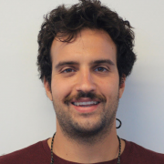
PhD Student at the University of California Santa Cruz
Software engineer, Ph.D. student, and father.
I am a NixOS enthusiast, which has led me to rethink basic Linux primitives.

Anita Zhang is the software engineering manager of Meta's Linux Userspace team. Her team connects Meta's infrastructure with the open source community. She is active on the systemd project and continues to support systemd at Meta as part of their userspace efforts.